Chuyến Tàu Thanh Xuân
Góc Kỷ Niệm
Lớp 10
Tấm ảnh 20/11 đầu tiên
Ngày 20/11 năm lớp 10, lần đầu tiên cả lớp có dịp làm gì đó cùng nhau. Mấy hôm trước,
đứa nào cũng xôn xao bàn tán trong group: “Tặng quà chi cho cô ri bây?” Rồi cả lớp thống
nhất, mỗi đứa góp một ít, chung tiền mua bó hoa thật đẹp tặng cô chủ nhiệm.
Sáng hôm đó, đứa nào cũng đến sớm. Đứa cầm tiền đi nhận hoa, đứa đứng canh trước cửa lớp để báo hiệu khi cô lên. Cả lớp nín thở chờ đợi. Khi cô vừa bước vào, với dòng chữ “Happy Teacher’s Day” to đùng trên bảng, cả lớp ào lên chúc mừng. Cô bất ngờ lắm, cười tươi suốt buổi sáng hôm ấy.
Đứa nào đó chợt nói: “Chụp hình đi cô ơi!” Thế là cả lớp kéo nhau lên bục giảng, chen chúc đứng vào nhau. Ai nấy đều chỉnh lại tóc tai, vuốt lại cổ áo. Nhờ một bạn lớp bên chụp giùm, cả lớp hướng về phía ống kính. Khoảnh khắc đó, có lẽ ai cũng rạng rỡ nhất trong ngày.
Tấm ảnh đầu tiên của A4 với cô chủ nhiệm ra đời như thế đó. Nhìn lại vẫn thấy cười vì mấy đứa ngày ấy còn lạ lẫm, mặt mũi ngây ngô. Vậy mà giờ sắp xa nhau rồi.
Sáng hôm đó, đứa nào cũng đến sớm. Đứa cầm tiền đi nhận hoa, đứa đứng canh trước cửa lớp để báo hiệu khi cô lên. Cả lớp nín thở chờ đợi. Khi cô vừa bước vào, với dòng chữ “Happy Teacher’s Day” to đùng trên bảng, cả lớp ào lên chúc mừng. Cô bất ngờ lắm, cười tươi suốt buổi sáng hôm ấy.
Đứa nào đó chợt nói: “Chụp hình đi cô ơi!” Thế là cả lớp kéo nhau lên bục giảng, chen chúc đứng vào nhau. Ai nấy đều chỉnh lại tóc tai, vuốt lại cổ áo. Nhờ một bạn lớp bên chụp giùm, cả lớp hướng về phía ống kính. Khoảnh khắc đó, có lẽ ai cũng rạng rỡ nhất trong ngày.
Tấm ảnh đầu tiên của A4 với cô chủ nhiệm ra đời như thế đó. Nhìn lại vẫn thấy cười vì mấy đứa ngày ấy còn lạ lẫm, mặt mũi ngây ngô. Vậy mà giờ sắp xa nhau rồi.
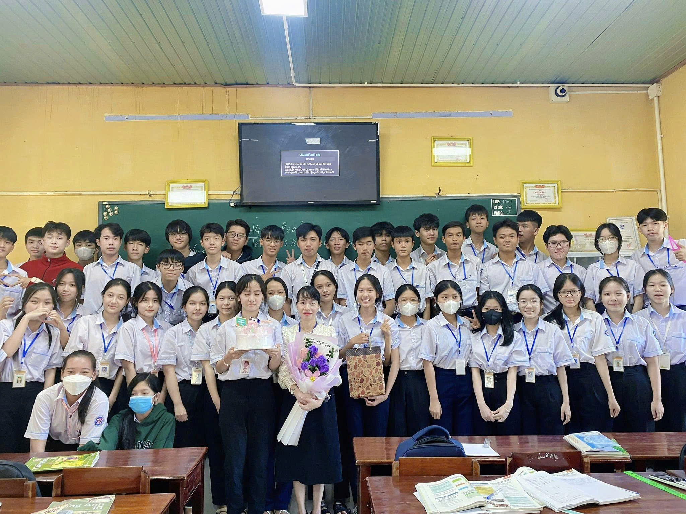
Lớp 11
Đón hai cô thực tập sinh
Hồi mới biết tin, cả lớp xôn xao hết mấy ngày. Đứa nào
cũng tò mò, không biết cô trẻ không, có dữ không, có vui không. Rồi hai cô cũng xuất
hiện. Nhẹ nhàng, hiền lành, lúc bước vào lớp còn hơi ngại ngùng nữa.
Cô Phương dạy Toán chậm rãi, tỉ mỉ. Có những bài khó, cô giảng đi giảng lại đến khi cả lớp gật đầu mới thôi. Cô Hiền dạy Anh thì vui hơn, hay tổ chức trò chơi, ghép nhóm, ghép đôi khiến mấy đứa vốn sợ Anh cũng hào hứng giơ tay phát biểu.
Nhưng có lẽ tụi mình nhớ nhất là những giờ ra chơi có hai cô.
Nhiều hôm, cô Hiền xách lên lớp một bì to đầy bánh kẹo. Cô vừa mở ra, cả lớp đã réo ầm lên. Cái bì bánh được chuyền từ bàn đầu xuống bàn cuối, đứa nào cũng thò tay vào bốc. Có đứa giành được cái kẹo to, cười tít mắt. Có đứa chậm chân, chỉ còn mấy cái kẹo nhỏ xíu, vẫn tươi cười ăn ké đứa bên cạnh.
Rồi các cô còn đem cả xoài lên lớp nữa. Thế là cả lớp xúm lại, đứa cầm dao cắt, đứa bóc từng miếng bỏ vào chén muối ớt. "Ê cho tao miếng nờ", "Ê cắt cho tao miếng, miếng to to ơ", tiếng giành nhau vang lên khắp lớp. Cô Hiền ngồi nhìn, cười hiền, bảo: "Từ từ thôi mấy đứa, còn nhiều mà". Vậy mà chẳng đầy mười lăm phút, hộp xoài hết veo.
Có những hôm rảnh rỗi, không khí trong lớp nhẹ nhàng, cả lớp kéo hai cô chụp ảnh. Kiểu ảnh 0.5 đang hot trend hồi đó. Rồi tụi mình ghép mấy tấm ảnh ấy thành video edit, hai tấm ảnh giật giật, nhạc nền cháy cháy. Tối đó lướt Facebook, thấy đứa nào cũng đăng, cũng tag hai cô.
Hai cô chỉ thực tập được mấy tháng thôi. Ngày cuối cùng, cả lớp ngồi im, lắng nghe những lời cuối cùng các cô dành cho lớp. Chẳng ai nói với ai câu nào, nhưng ai cũng tiếc. Cô Hiền cười, bảo: "Mai mốt cô về trường mình, nhớ học tốt nha mấy đứa". Cô Phương thì cứ nhìn quanh lớp, như muốn nhớ thật kỹ từng góc, từng bàn, từng gương mặt.
Giờ nghĩ lại, thấy thương hai cô quá. Cảm ơn cô Phương, cô Hiền vì đã đến, vì những giờ học vui vẻ, vì những bì bánh kẹo, những hộp xoài, những kỷ niệm đáng nhớ và cả những tấm ảnh 0.5 thật đẹp mà đứa nào cũng giữ đến tận bây giờ.
Cô Phương dạy Toán chậm rãi, tỉ mỉ. Có những bài khó, cô giảng đi giảng lại đến khi cả lớp gật đầu mới thôi. Cô Hiền dạy Anh thì vui hơn, hay tổ chức trò chơi, ghép nhóm, ghép đôi khiến mấy đứa vốn sợ Anh cũng hào hứng giơ tay phát biểu.
Nhưng có lẽ tụi mình nhớ nhất là những giờ ra chơi có hai cô.
Nhiều hôm, cô Hiền xách lên lớp một bì to đầy bánh kẹo. Cô vừa mở ra, cả lớp đã réo ầm lên. Cái bì bánh được chuyền từ bàn đầu xuống bàn cuối, đứa nào cũng thò tay vào bốc. Có đứa giành được cái kẹo to, cười tít mắt. Có đứa chậm chân, chỉ còn mấy cái kẹo nhỏ xíu, vẫn tươi cười ăn ké đứa bên cạnh.
Rồi các cô còn đem cả xoài lên lớp nữa. Thế là cả lớp xúm lại, đứa cầm dao cắt, đứa bóc từng miếng bỏ vào chén muối ớt. "Ê cho tao miếng nờ", "Ê cắt cho tao miếng, miếng to to ơ", tiếng giành nhau vang lên khắp lớp. Cô Hiền ngồi nhìn, cười hiền, bảo: "Từ từ thôi mấy đứa, còn nhiều mà". Vậy mà chẳng đầy mười lăm phút, hộp xoài hết veo.
Có những hôm rảnh rỗi, không khí trong lớp nhẹ nhàng, cả lớp kéo hai cô chụp ảnh. Kiểu ảnh 0.5 đang hot trend hồi đó. Rồi tụi mình ghép mấy tấm ảnh ấy thành video edit, hai tấm ảnh giật giật, nhạc nền cháy cháy. Tối đó lướt Facebook, thấy đứa nào cũng đăng, cũng tag hai cô.
Hai cô chỉ thực tập được mấy tháng thôi. Ngày cuối cùng, cả lớp ngồi im, lắng nghe những lời cuối cùng các cô dành cho lớp. Chẳng ai nói với ai câu nào, nhưng ai cũng tiếc. Cô Hiền cười, bảo: "Mai mốt cô về trường mình, nhớ học tốt nha mấy đứa". Cô Phương thì cứ nhìn quanh lớp, như muốn nhớ thật kỹ từng góc, từng bàn, từng gương mặt.
Giờ nghĩ lại, thấy thương hai cô quá. Cảm ơn cô Phương, cô Hiền vì đã đến, vì những giờ học vui vẻ, vì những bì bánh kẹo, những hộp xoài, những kỷ niệm đáng nhớ và cả những tấm ảnh 0.5 thật đẹp mà đứa nào cũng giữ đến tận bây giờ.
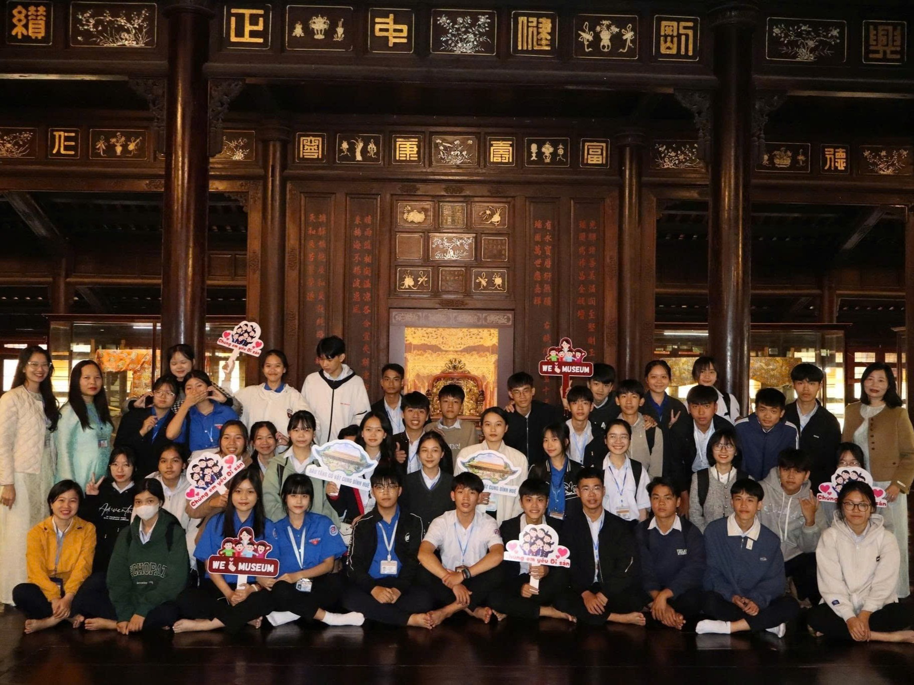
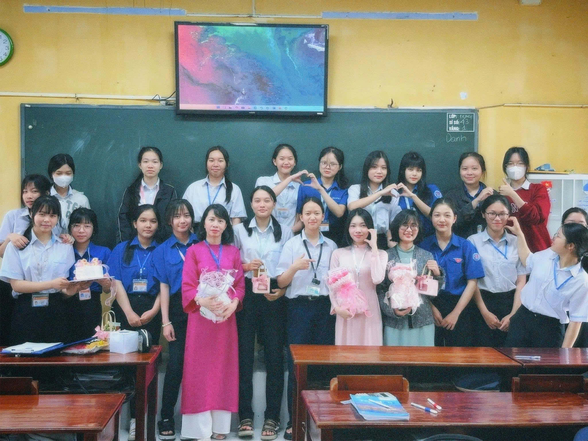
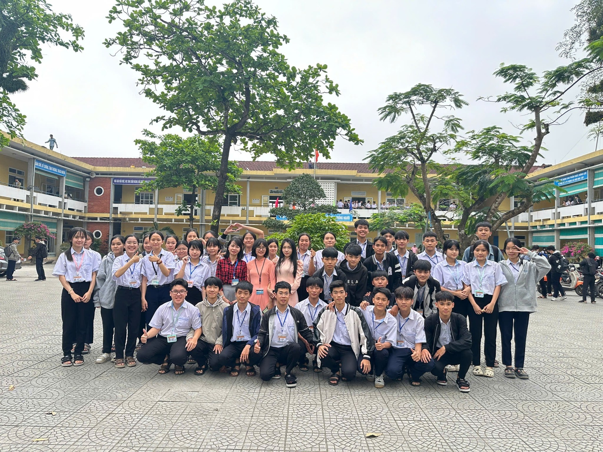
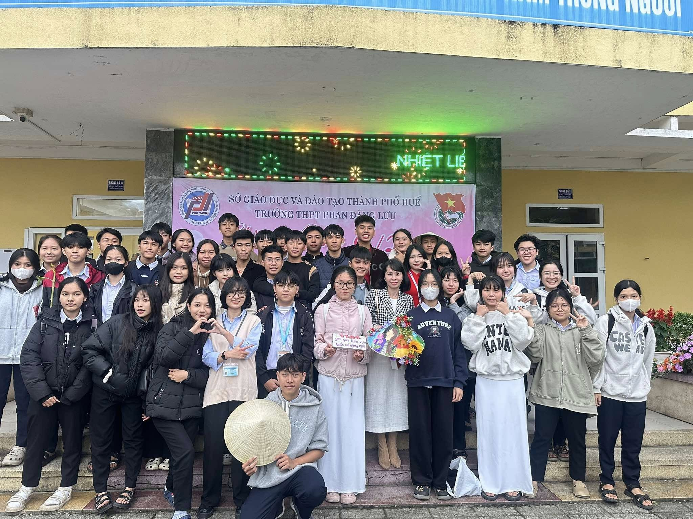
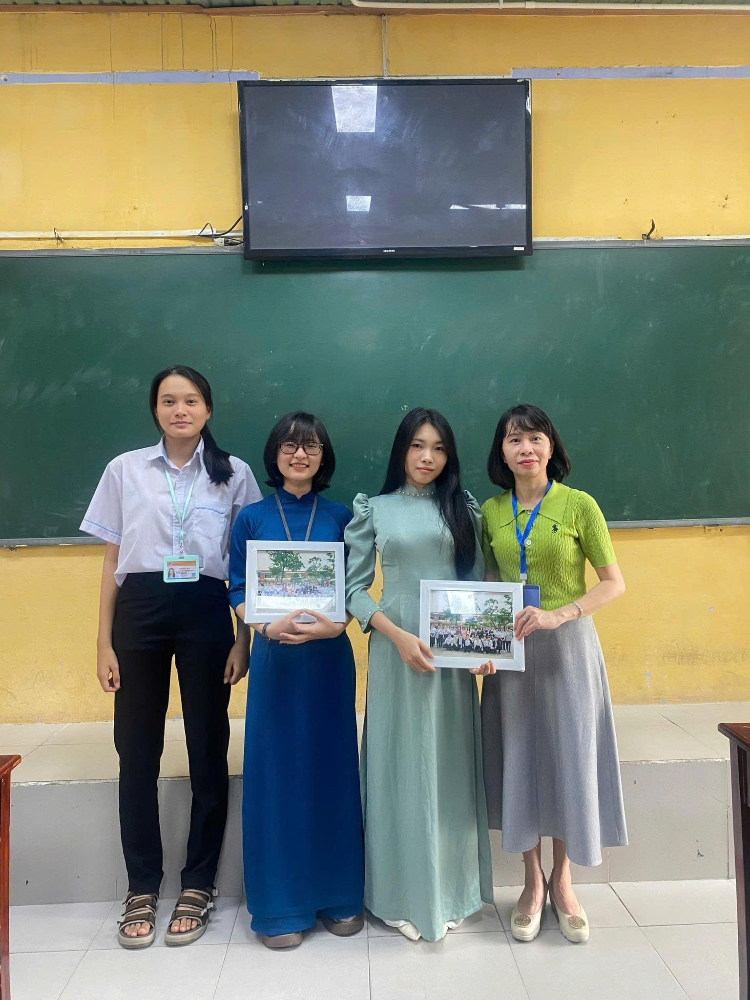
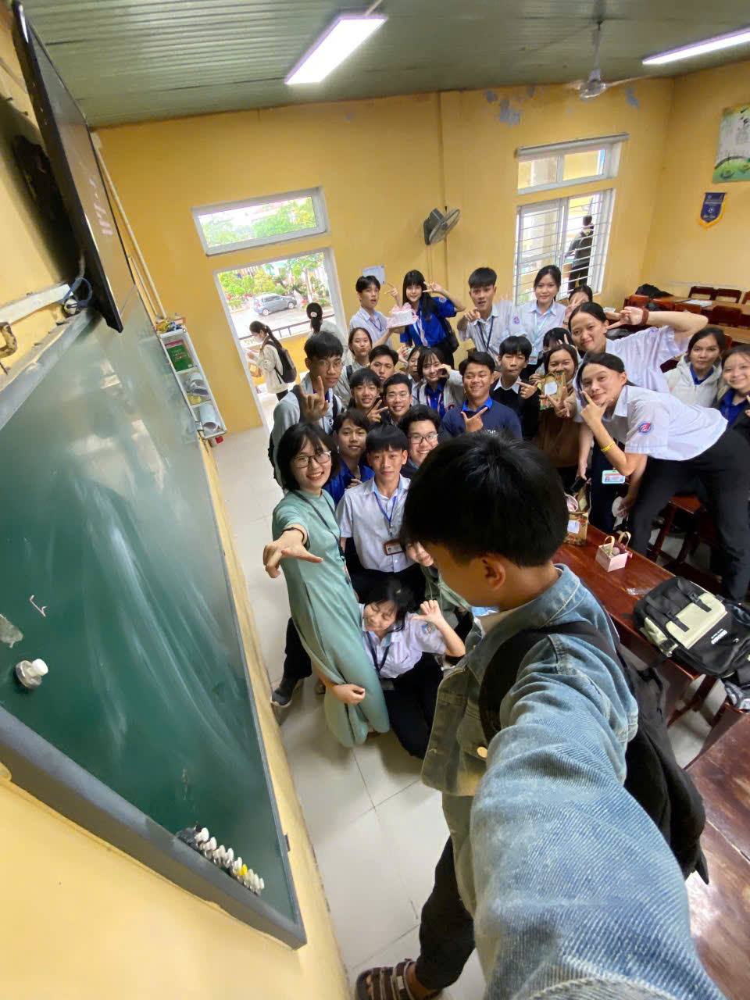
Những chiếc túi xách “hàng hiệu” từ hội con gái (19/11)
Hôm đó là thứ Năm, lịch học chỉ có hai tiết buổi sáng. Tụi
con trai bọn tôi đứa nào cũng tính sẵn: học xong về ngủ bù cho đã. Ai ngờ vừa kéo nhau
định về, đã bị hội con gái ngăn lại, cả lũ đứng hình mất vài giây.
Tụi nó bắt đứng xếp hàng trên bục giảng, rồi từ đâu ra xách những chiếc túi hàng limited được làm bằng đủ loại bánh kẹo, rồi đi đeo cho từng thằng như trao giải.
Nhìn mấy cái túi được làm bằng ló bánh kẹo tỉ mỉ, thằng nào cũng xuýt xoa: “Đẹp ri bây!” Có đứa còn chưa dám mở ra vì sợ hỏng mất cái túi. Hội con gái ngồi trong cười khúc khích, mặt đứa nào cũng tỏ vẻ tự hào vì công trình cả buổi chiều hôm trước.
Thì ra cả hội đã hẹn nhau về nhà một đứa, ngồi cắt dây, buộc nơ, dan bánh kẹo rồi làm quai đeo. Công phu nhất là khâu làm sao cho mấy cái túi đứng form, không bị xẹp, quai đeo chắc chắn để tụi con trai có thể đeo lên vai thật.
Một thằng trong lớp đeo thử lên vai, đi qua đi lại làm người mẫu, cả lớp cười lăn vì nhìn như đi dạo phố. Nhưng mà phải công nhận, hội con gái khéo tay thiệt, mấy cái túi nhìn không khác gì hàng bán ngoài tiệm.
Giờ nghĩ lại, mấy cái túi bánh kẹo ấy chẳng đáng bao nhiêu tiền. Nhưng cái công ngồi tỉ mẩn dan từng cái bánh, cái tình cảm tụi nó dành cho tụi mình thì đáng nhớ lắm. Cảm ơn hội con gái A4 - những nhà thiết kế thời trang tài ba của lớp!
Tụi nó bắt đứng xếp hàng trên bục giảng, rồi từ đâu ra xách những chiếc túi hàng limited được làm bằng đủ loại bánh kẹo, rồi đi đeo cho từng thằng như trao giải.
Nhìn mấy cái túi được làm bằng ló bánh kẹo tỉ mỉ, thằng nào cũng xuýt xoa: “Đẹp ri bây!” Có đứa còn chưa dám mở ra vì sợ hỏng mất cái túi. Hội con gái ngồi trong cười khúc khích, mặt đứa nào cũng tỏ vẻ tự hào vì công trình cả buổi chiều hôm trước.
Thì ra cả hội đã hẹn nhau về nhà một đứa, ngồi cắt dây, buộc nơ, dan bánh kẹo rồi làm quai đeo. Công phu nhất là khâu làm sao cho mấy cái túi đứng form, không bị xẹp, quai đeo chắc chắn để tụi con trai có thể đeo lên vai thật.
Một thằng trong lớp đeo thử lên vai, đi qua đi lại làm người mẫu, cả lớp cười lăn vì nhìn như đi dạo phố. Nhưng mà phải công nhận, hội con gái khéo tay thiệt, mấy cái túi nhìn không khác gì hàng bán ngoài tiệm.
Giờ nghĩ lại, mấy cái túi bánh kẹo ấy chẳng đáng bao nhiêu tiền. Nhưng cái công ngồi tỉ mẩn dan từng cái bánh, cái tình cảm tụi nó dành cho tụi mình thì đáng nhớ lắm. Cảm ơn hội con gái A4 - những nhà thiết kế thời trang tài ba của lớp!
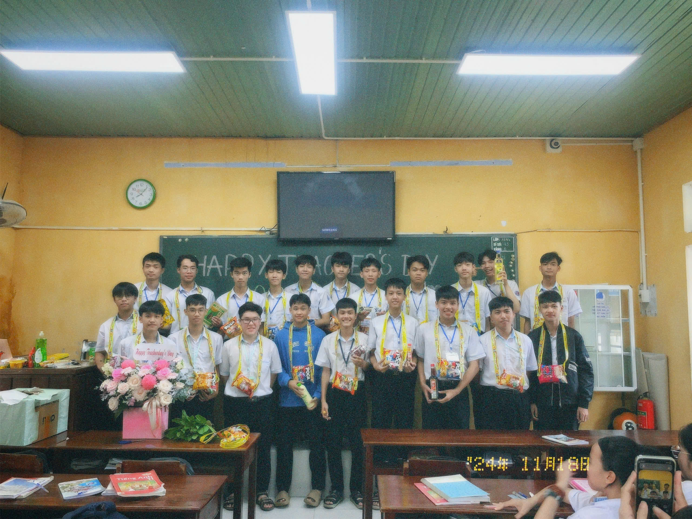
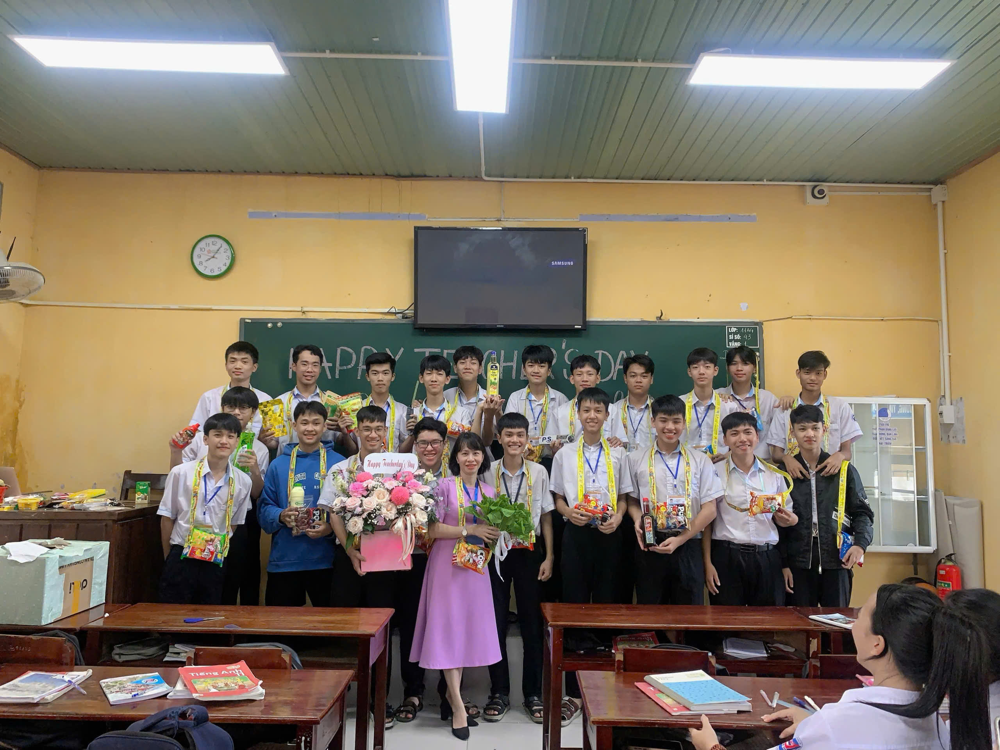
Món quà “bất ổn” nhất (20/11)
20/11 năm lớp 11, cả lớp rủ nhau làm một cú “lầy lội” mà
chắc chắn không thể nào quên.
Từ mấy hôm trước, tụi mình đã bí mật lên kế hoạch. Mỗi đứa góp một ít, rồi cử vài người đi mua đồ. Nhưng đồ mua chẳng phải hoa tươi hay thiệp đẹp, mà toàn mấy thứ linh tinh: xà bông tắm, nước rửa chén, nước lau sàn, rồi mắm, muối, đường, hạt nêm, tương ớt. Nhìn mấy món đồ chất đống trên bàn, cả lớp ôm bụng cười không ngớt.
Công phu nhất là tiết mục chính: một thằng trong lớp chui vào thùng carton to, giả làm hộp quà. Cái thùng được quấn giấy màu bên ngoài, buộc nơ cẩn thận. Sáng hôm đó, nó chui vào từ sớm, nằm co ro trong thùng chờ giờ.
Khi cô chủ nhiệm bước vào lớp, cả lớp chỉ im lặng chỉ về phía thùng quà to đùng giữa phòng. Cô ngơ ngác tiến lại gần, vừa mở nắp ra thì thùng quà bỗng nhiên nhảy dựng lên. Cô giật bấn người, lùi lại mấy bước, còn cả lớp thì cười ầm trời. Hóa ra là thằng bạn trong lớp đang đứng trong thùng, mặt toe toét.
Rồi đến phần bóc mấy món quà còn lại. Cô ngồi giữa lớp, tụi mình vây quanh xem cô bóc từng cái. Xà bông, nước rửa chén, nước lau sàn, mắm, muối, đường, hạt nêm, tương ớt... Món nào cô cũng cầm lên xem, vừa ngạc nhiên vừa buồn cười. Có lẽ cô chưa bao giờ nhận được món quà 20/11 nào “đặc biệt” đến vậy.
Hôm đó, cô ôm hết mấy món quà về, bảo sẽ để dùng dần. Nhìn cô xách bao tải quà xuống cầu thang mà cả lớp cứ cười hoài.
Giờ nghĩ lại, vẫn thấy buồn cười vì cái ý tưởng đi mua nước rửa chén tặng cô ngày 20/11. Nhưng mà chính những điều “bất ổn” ấy mới làm nên kỷ niệm khó quên của A4.
Từ mấy hôm trước, tụi mình đã bí mật lên kế hoạch. Mỗi đứa góp một ít, rồi cử vài người đi mua đồ. Nhưng đồ mua chẳng phải hoa tươi hay thiệp đẹp, mà toàn mấy thứ linh tinh: xà bông tắm, nước rửa chén, nước lau sàn, rồi mắm, muối, đường, hạt nêm, tương ớt. Nhìn mấy món đồ chất đống trên bàn, cả lớp ôm bụng cười không ngớt.
Công phu nhất là tiết mục chính: một thằng trong lớp chui vào thùng carton to, giả làm hộp quà. Cái thùng được quấn giấy màu bên ngoài, buộc nơ cẩn thận. Sáng hôm đó, nó chui vào từ sớm, nằm co ro trong thùng chờ giờ.
Khi cô chủ nhiệm bước vào lớp, cả lớp chỉ im lặng chỉ về phía thùng quà to đùng giữa phòng. Cô ngơ ngác tiến lại gần, vừa mở nắp ra thì thùng quà bỗng nhiên nhảy dựng lên. Cô giật bấn người, lùi lại mấy bước, còn cả lớp thì cười ầm trời. Hóa ra là thằng bạn trong lớp đang đứng trong thùng, mặt toe toét.
Rồi đến phần bóc mấy món quà còn lại. Cô ngồi giữa lớp, tụi mình vây quanh xem cô bóc từng cái. Xà bông, nước rửa chén, nước lau sàn, mắm, muối, đường, hạt nêm, tương ớt... Món nào cô cũng cầm lên xem, vừa ngạc nhiên vừa buồn cười. Có lẽ cô chưa bao giờ nhận được món quà 20/11 nào “đặc biệt” đến vậy.
Hôm đó, cô ôm hết mấy món quà về, bảo sẽ để dùng dần. Nhìn cô xách bao tải quà xuống cầu thang mà cả lớp cứ cười hoài.
Giờ nghĩ lại, vẫn thấy buồn cười vì cái ý tưởng đi mua nước rửa chén tặng cô ngày 20/11. Nhưng mà chính những điều “bất ổn” ấy mới làm nên kỷ niệm khó quên của A4.
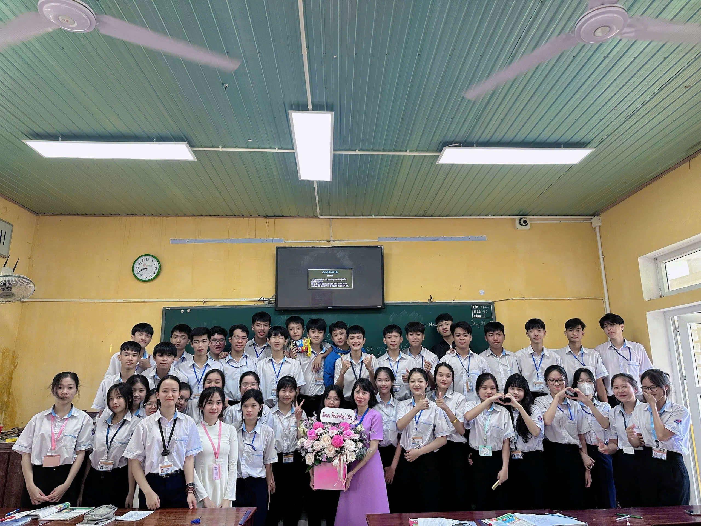
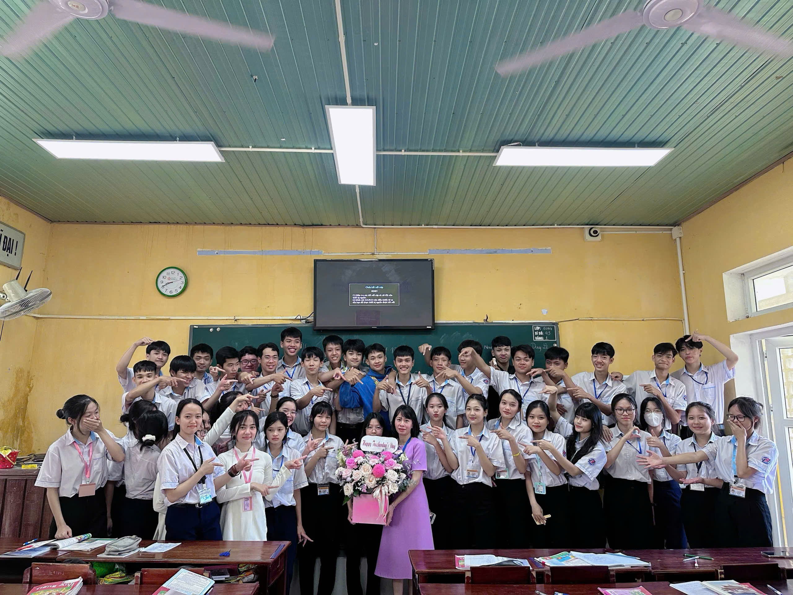
Lớp 12
Khoảnh khắc vô địch
Giải bóng đá nam lớp 12, không ai trong lớp nghĩ đội mình
có thể đi xa. Những trận đầu tiên, ai cũng lo lắng. Có trận thắng dễ dàng, có trận kéo
dài căng thẳng. Nhưng qua mỗi vòng, tinh thần cả đội càng lúc càng lên cao.
Bên ngoài sân bóng, hội con gái đứng thành hàng dài, mắt dán chặt vào trái bóng. Tiếng la hét vang lên không ngớt mỗi khi đội nhà có pha bóng nguy hiểm. Đứa thì cầm chai nước giơ cao, chờ sẵn khi các cầu thủ chạy ra biên là chạy theo tiếp tế. Đứa ôm bình xịt, đứa cầm khăn lau mặt, đứa nào đứa nấy mặt mũi đỏ bừng vì nắng và vì hò hét. Có những pha bóng căng thẳng, cả dàn con gái nín thở, rồi bùng lên như vỡ chợ khi đội nhà ghi bàn. Tụi nó la đến khản cả cổ, hôm sau đi học đứa nào cũng khàn tiếng nhưng vẫn cười toe.
Ngày đội bóng lớp mình vào chung kết, cả lớp đứng ngoài sân cổ vũ hết mình. Suốt trận đấu, tiếng la hét vang lên không ngớt, đứa nào cũng hồi hộp đến nghẹt thở.
Khi tiếng còi kết thúc trận đấu vang lên, A4 đã giành chức vô địch. Cả lớp như vỡ òa, tất cả ào vào sân, ôm chầm lấy nhau. Có đứa cười, có đứa chẳng nói được gì chỉ biết nhảy lên sung sướng. Tiếng reo hò, vỗ tay vang khắp sân cỏ.
Khoảnh khắc ấy, không cần nói nhiều, ai cũng hiểu rằng đây là một trong những kỷ niệm đẹp nhất của A4.
Bên ngoài sân bóng, hội con gái đứng thành hàng dài, mắt dán chặt vào trái bóng. Tiếng la hét vang lên không ngớt mỗi khi đội nhà có pha bóng nguy hiểm. Đứa thì cầm chai nước giơ cao, chờ sẵn khi các cầu thủ chạy ra biên là chạy theo tiếp tế. Đứa ôm bình xịt, đứa cầm khăn lau mặt, đứa nào đứa nấy mặt mũi đỏ bừng vì nắng và vì hò hét. Có những pha bóng căng thẳng, cả dàn con gái nín thở, rồi bùng lên như vỡ chợ khi đội nhà ghi bàn. Tụi nó la đến khản cả cổ, hôm sau đi học đứa nào cũng khàn tiếng nhưng vẫn cười toe.
Ngày đội bóng lớp mình vào chung kết, cả lớp đứng ngoài sân cổ vũ hết mình. Suốt trận đấu, tiếng la hét vang lên không ngớt, đứa nào cũng hồi hộp đến nghẹt thở.
Khi tiếng còi kết thúc trận đấu vang lên, A4 đã giành chức vô địch. Cả lớp như vỡ òa, tất cả ào vào sân, ôm chầm lấy nhau. Có đứa cười, có đứa chẳng nói được gì chỉ biết nhảy lên sung sướng. Tiếng reo hò, vỗ tay vang khắp sân cỏ.
Khoảnh khắc ấy, không cần nói nhiều, ai cũng hiểu rằng đây là một trong những kỷ niệm đẹp nhất của A4.
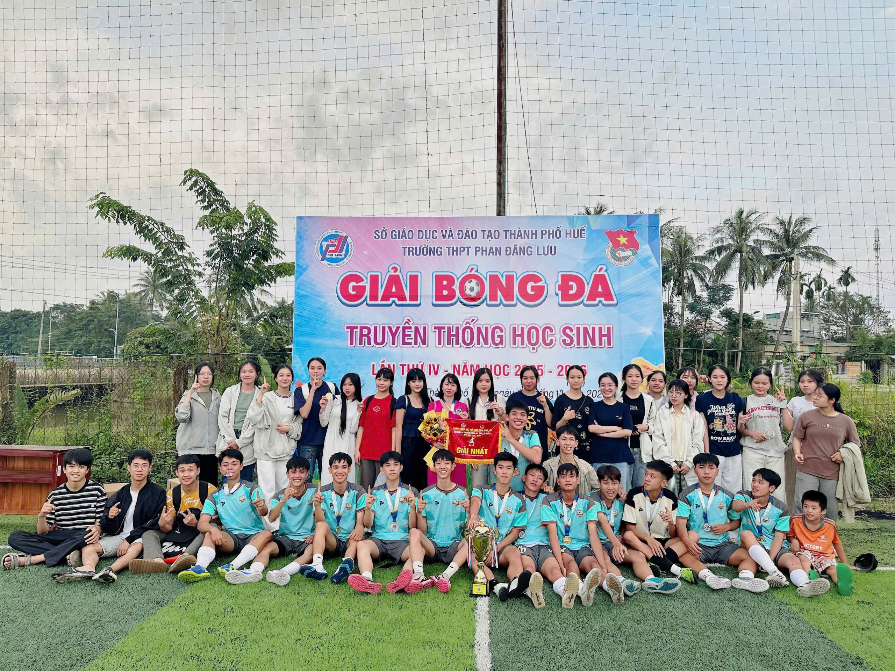
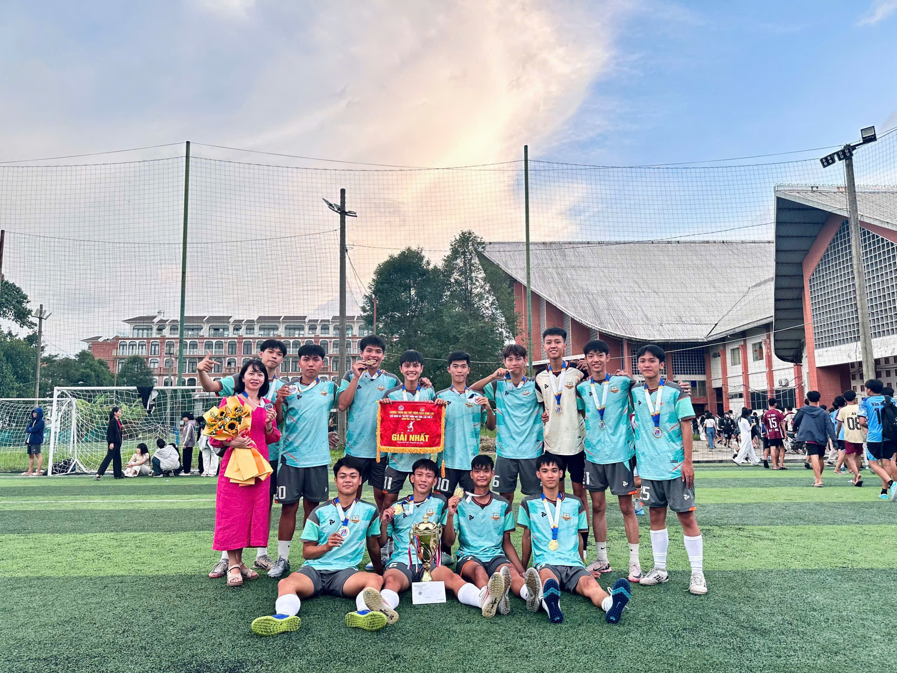